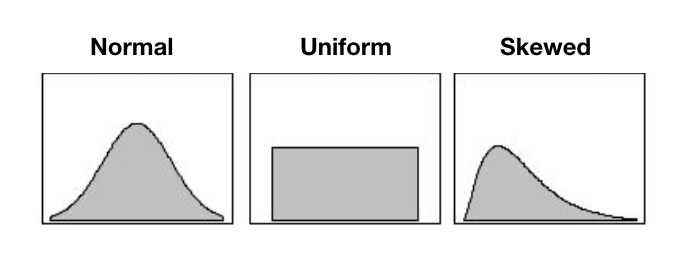

Using standart to inspect your reduced genome sequences
Thierry Gosselin
2025-04-01
Source:vignettes/using_standart.Rmd
using_standart.RmdThe vignette purpose is to show users how to use standart, an R package that provides R functions to help solve the most common challenges of genome reduction sequences quality control (DArT, RADseq, GBS, etc).
standart really shines in projects that requires consistency among sequencing runs and when samples are from animals with large and complicated genomes.
Coding style
- standart is trying hard to follow the tidyverse style guide.
- Inside stardart, using parallel execution is always through the use
of the argument:
parallel.core.
Dependencies
- Make sure you have the latest R and RStudio version before installing stardart. My other package radiator as a nice vignette for this.
- Install stardart by following the instructions.
Quality control
I highly recommend running the sequencing files (entire lane or chip) through a software dedicated for QC. If you have bad sequencing, no need to go further in the pipeline…
reads length
If you are using Illumina sequencing, chances are that you have 100 pb reads (SE RADseq). With Ion Torrent, the size will be highly variable and you have to determine the optimal size to cut your reads to the same length, if the pipeline you are using for assembly requires it. Note that most pipeline that performs de novo assembly works better with uniform read length.
- output of FastQC
FastQC will output the read length distribution. But it’s difficult to know how many markers you will get depending on read size.
You will see the relationship between the position of the nucleotide on the read and overall quality. This is very helpful to determine if you want to cut all your Illumina reads to 80 or 90 pb.
Below is a FastQC figure of a typical Ion Torrent sequencing
chip sequence length distribution:

- Use standart
Below is a figure generated by standart that shows the number of reads you will get depending on the maximum size threshold selected:
The function is:
size <- standart::reads_length_distribution(
fq.file = "my-fastq.fastq.gz",
with.future = TRUE,
parallel.core = 12L
)You can use individual file or entire chip or lane. Function
documentation: ?standart::reads_length_distribution
Remember that depending of types of file (individual or entire lane/chip:
- Barcodes and adapters might be in this relationship observed in the figure.
- It’s not uncommon to see increasing adapters present with increasing read size.
- Repetitive sequences, unique reads and so on might impact the results (see noise section below).
Noise reduction
Reducing the noise in an individual FQ file could really help speeding up your analysis. I use it when I have more than 200 samples. Nothing new here:
- Daniel Ilut explains it in his pipeline (Ilut et al. 2014) and my function here his basically the same as his but in R…
- Jon Puritz’s dDocent data reduction step as a similar example.
- Praveen’s pipeline RADProc (Ravindran et al. 2019) use something similar.
- Metagenomic analysis pipeline all have some step of denoising the data.
Visualization
I prefer Daniel Ilut way of visualizing the information.
The function stardart::read_depth_plot requires 1 FQ
file (after stacks process_radtags or
stackr::run_process_radtags) and is very fast to
run. It will highlight read coverage groups of distinct reads
within a sample. When I say distinct reads, is reads that are exactly
the same, no mismatches. The distinct reads are putative allele.

4 read coverage groups are shown:
distinct reads with low coverage (in red): these reads are likely sequencing errors or uninformative polymorphisms (shared only by a few samples).
-
disting reads for a target coverage (in green):
- Usually represent around 80% of the reads in the FQ file.
- It’s a safe coverage range to start exploring your data (open for discussion).
- Lower threshold (default = 7): you could go as low as maybe 3 ? You can’t escape it, it’s your tolerance to call heterozygote a true heterozygote. You want a minimum coverage for both the reference and the alternative allele. Yes, you can use population information to lower this threshold or use some fancy bayesian algorithm.
- Higher threshold: is a lot more open for discussion, here it’s the lower limit of another group (the orange, see below for description). Minus 1 bp.
distinct reads with high coverage > 1 read depth (in yellow): those are legitimate alleles with high coverage.
distinct and unique reads with high coverage (in orange): this is where you’ll find paralogous sequences, transposable elements and other high copy number variants.
To run it on your data:
read.plot <- standart::read_depth_plot(
fq.file = "my-fq.fq.gz",
min.coverage.fig = 7L, #default
parallel.core = parallel::detectCores() - 1 #default
)The function will generate the plot shown above and write the figure
in the working directory, using the sample name:
my-fq_hap_read_depth.png.
FAQ
Should I run the function on all samples ?
Please don’t. Their is no use in running this on the entire dataset. It’s going to be fairly the same. Run it on a couple of samples. Based on the number of reads (distribution), choose 1 sample: below average, average and above average and compare the look of the figures produced.
Filtering ?
Removing the noise in FQ files, it’s usually a hot topic… Personally, the less I do the better and it’s definitely the case for small projects. I don’t think the noise is a problem for pipline like stacks. For large projects, it’s something else, and certainly a huge bottleneck. When you generate de novo assembly for more than 2000 samples and generate a catalog with all the noise, cleaning the data can represent weeks of computation time that you shave off your project!
To test:
1. Clean the FQ file
Use the sample you just used in the read coverage groups, above,
clean it with standart::clean_fq. It’s very fast to
run:
clean.fq.name <- standart::clean_fq(
fq.file = "my-fq.fq.gz",
min.coverage.threshold = 2,
remove.unique.reads = TRUE, #default
write.blacklist.fasta = TRUE,
write.blacklist = FALSE, #default
parallel.core = parallel::detectCores() - 1, #default
verbose = TRUE #default
)This will generate:
my-fq_cleaned.fq.gz # the cleaned fq file
my-fq_blacklisted_reads.fasta.gz # a fasta file with blacklisted sequences...2. Run your de novo assembly pipeline
Run your de novo assembly pipeline (e.g. stacks or stackr
and do the next step below: the mismatch threshold series
(using stackr::run_ustacks). For this, use the raw and
clean FQ files and compare the output…
In all my projects, having less reads (the cleaned FQ file) means:
- faster de novo assemblies (I’ve seen up to 3 times faster).
- less loci generated, but of better qualities:
- higher coverage in all the de novo assembly steps of stacks
- less repetitive stacks blacklisted
- lower number of locus with assembly artifacts (lors of SNPs/locus, etc)
- very similar heterozygosity and homozygosity proportions
- the mismathches plots are almost always identical: showing me that I
can use the same Mismatch threshold (the
-Min stacks ustacks) for the cleaned or the raw FQ files. - faster catalog generation time, the stacks cstacks or
stackr::run_cstacksstep. - NO DIFFERENCES in downstream analysis (population structure, outlier detection, Fst, assignment, closekin).
Why keep the blacklisted sequences (the fasta file) ?
You could use Biostrings::countPattern function to look
for TE in those sequences;)
3. Filtering the entire dataset
If you see a big difference and are convince that filtering is the way to go, you can easily do it with this piece of code:
fq.to.clean <- list.files(path = "04_process_radtags/")
names(fq.to.clean) <- fq.to.clean
clean.all <- purrr::map_df(
.x = fq.to.clean,
.f = standart::clean_fq,
min.coverage.threshold = 5,
remove.unique.reads = TRUE, #default
write.blacklist.fasta = TRUE,
write.blacklist = FALSE, #default
parallel.core = 12
)Transfer the cleaned files or the raw ones in a separate folder/sub-folder to keep things tidy.
Data normalization
Another hot topic, up for debate…
After the stacks step called process_radtags, in stackr
run_process_radtags, looking at the distribution of the
number of reads per sample, you might be getting one of these
distribution:

In an ideal world, you want the uniform distribution. That translate in good field and wet-lab techniques:
- tissue sampling and preservation
- extraction (robots ?)
- pipetting
- DNA quantification
- all the other required techniques
And this resulted in similar sequenced information between your samples. You’re about to compare apples with apples. :)
If you have a skewed (left or right) or a normal distribution, you’ll be comparing apples with … citrus. The samples with lower reads will have less loci and usually less heterozygous loci. Similarly, the samples with higher number of reads will have more loci, more heterozygous loci.
What’s the likely cause for these ?
- student with no prior wet-lab experience doing the DNA extraction or downstream step (e.g. library prep)
- data preservation issues: historical DNA, fragmented DNA, etc.
- skipping the DNA quantification or library QC steps
Ok, but what’s the problem with that ?
Potentially these problems:
- ascertainment bias that could drive populations polymorphism discovery bias
- missing data patterns
- individual heterozygosity problems or patterns
- downstream analysis impacted by the differences between your samples: artifactual or biological ?
Solutions ?
1. Wet-lab normalization
Here are the basic steps:
- sequence the samples
- look at the stats we’ve discussed
- go back in the wet-lab to prepare a new plate
- sequence
- pool or not the lanes/chips
- look at the sequencing statistics
- repeat the step above or continue with the pipeline
I’m not a fan:
- Way to many wet-lab steps.
- The wet-lab is THE MOST important part.
- Everything gets exacerbated with RADseq.
- I’m not in favor of pooling lanes or chips (more on this some day!).
- It’s really not like working with microsatelites.
2. Bio-informatic normalization
When doing it right from the start is impossible, I prefer to do the
normalization after de demultiplexing step… after for example
stackr::run_process_radtags. The prerequisite is to have
enough sequencing material (reads) for all my samples.
The tool? standart::normalize_reads function.
Rarefaction of fasq files by sub-sampling the reads before de novo assembly or alignment is not new:
- Community and biodiversity ecologists are well aware of species accumulation curves obtained with rarefaction (Sanders, 1968). The rarefaction method guarantees the samples have the same weight in the analysis.
- Metagenomics community before analyzing the alpha diversity will deal with differing sample depth for a given diversity statistic by using rarefaction. It means taking a random subset of a given size of the original sample (see mothur, Schloss et al. 2009).
- Molecular ecologists for some reasons, RADseq enthusiasts seems unaware of this concept, but see (Hale et al. 2009; Kalinowski, 2004 and Puncher et al. 2018).
- The Keywords: rarefaction, sub-sampling, normalization, standardization, sample size correction.
The steps ?
- the goal is to reduce variance in number of reads between samples
- rarefaction/normalization is conducted aon the fq file after stacks process_radtags and after removing the noise.
- normalized replicates are generated by the function by randomly selecting the reads (without replacement) for each samples
- you choose the number of replicates (default: 3) and you manage those replicates like other replicates you might have (you want replicates…).
Read the function documentation and look at the example
# To run this function, bioconductor's ShortRead package is necessary:
BiocManager::install("ShortRead")
# using defaults:
standart::normalize_reads(path.samples = "~/corals")
# customizing the function:
standart::normalize_reads(
project.info = "project.info.corals.tsv",
path.samples = "04_process_radtags",
sample.reads = 2000000,
number.replicates = 3,
random.seed = 3,
parallel.core = 12
)My observations using rarefaction:
- the replicates have similar mismathches plots: showing me that I can
use the same Mismatch threshold (the
-Min stacks ustacks) for the rarefied samples. - better de novo assembly statistics
- when the individual or population heterozygosity is a real biological signal, rarefaction doesn’t impact the downstream analysis.
- when the heterozygosity was driven by the sequencing bias, bioinformatic rarefaction took care of the problem.
FAQ
It doesn’t bother you to throw away all the valuable information that samples with high read numbers have ?
Absolutely not!
- most of the information is already lost: that is if you used stacks to generate a catalog and then filtered the data to keep markers in x individuals and/or in all sampling sites/populations. At this step it’s either you loose markers or get more missing data…
- It’s not a loss of information if the information cannot be confirmed with other samples: it’s a statistic problem and ecologists are well aware of this.
- The loss of reads is intrinsic to RADseq: Don’t believe me, inspect stacks, stackr or any RADseq pipeline log files… Rarefaction is just another step, molecular ecologists are not used to it.
- check the total read depth of 1 sample after all the bioinformatic steps. Compare the numbers with the actual read number from the start of the pipeline. If you have > 30% you are lucky!
References
Ilut, D., Nydam, M., Hare, M. (2014). Defining Loci in Restriction-Based Reduced Representation Genomic Data from Non model Species: Sources of Bias and Diagnostics for Optimal Clustering BioMed Research International 2014(2), 1 9. https://dx.doi.org/10.1155/2014/675158
Rochette, N., Rivera‐Colón, A., Catchen, J. (2019). Stacks 2: Analytical methods for paired‐end sequencing improve RADseq‐based population genomics. Molecular Ecology https://dx.doi.org/10.1111/mec.15253
Harvey, M., Judy, C., Seeholzer, G., Maley, J. (2015). Similarity thresholds used in short read assembly reduce the comparability of population histories across species PeerJ 3(), e895. https://dx.doi.org/10.7717/peerj.895
Ravindran, P., Bentzen, P., Bradbury, I., Beiko, R. (2019). RADProc: A computationally efficient de novo locus assembler for population studies using RADseq data Molecular Ecology Resources 19(1), 272-282. https://dx.doi.org/10.1111/1755-0998.12954
Schloss, P.D., et al., Introducing mothur: Open-source, platform-independent, community-supported software for describing and comparing microbial communities. Appl Environ Microbiol, 2009. 75(23):7537-41.
Sanders HL (1968) Marine benthic diversity: A comparative study. The American Naturalist 102: pp. 243–282
Hale et al. (2009) on the relative merits of normalization and rarefaction in gene discovery in sturgeons. BMC genomics, 10, 203.
Kalinowski (2004) Counting Alleles with Rarefaction. Conservation Genetics, 5, 539–543.
Puncher et al. (2018) Molecular Ecology Resources, 44, 678.